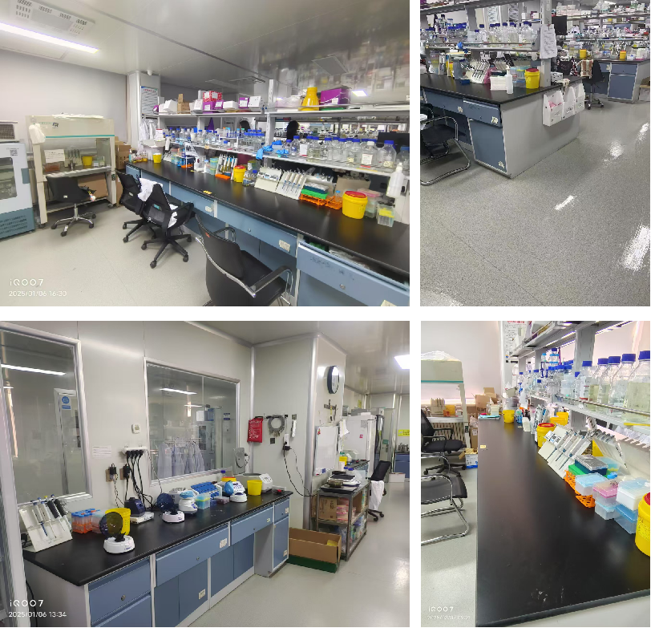
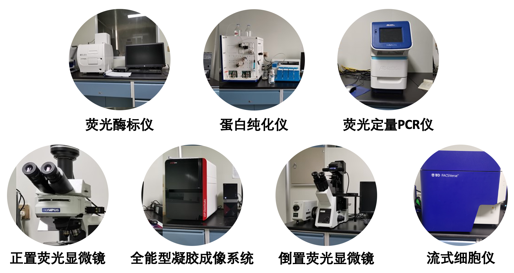

Laboratory environment & equipment
Overview of our experimental spaces and major instruments.
Laboratory environment
Core laboratory space for parasite culture, molecular biology and routine experiments, providing a well-organized and clean environment for daily research.
Major instruments
Major instruments including fluorescence microscopes, protein purification systems, quantitative PCR instruments, flow cytometer and imaging platforms that support Cryptosporidium and Giardia research.